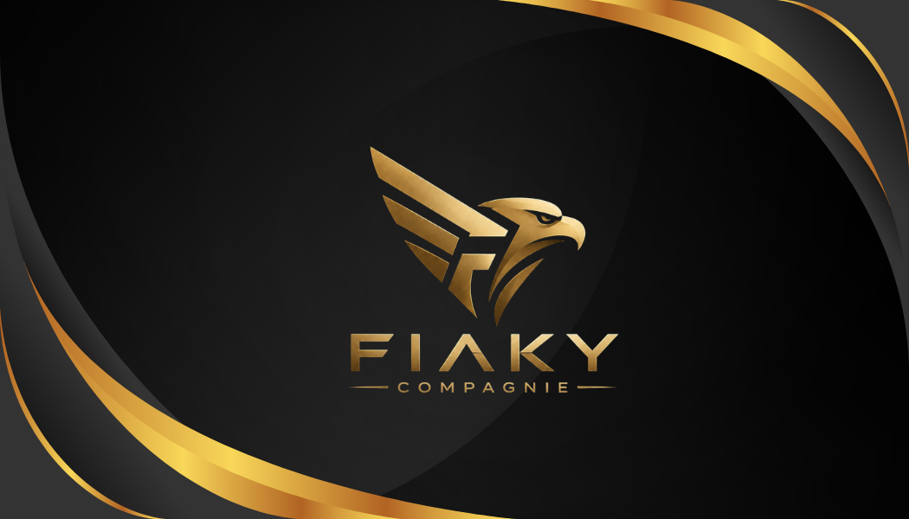
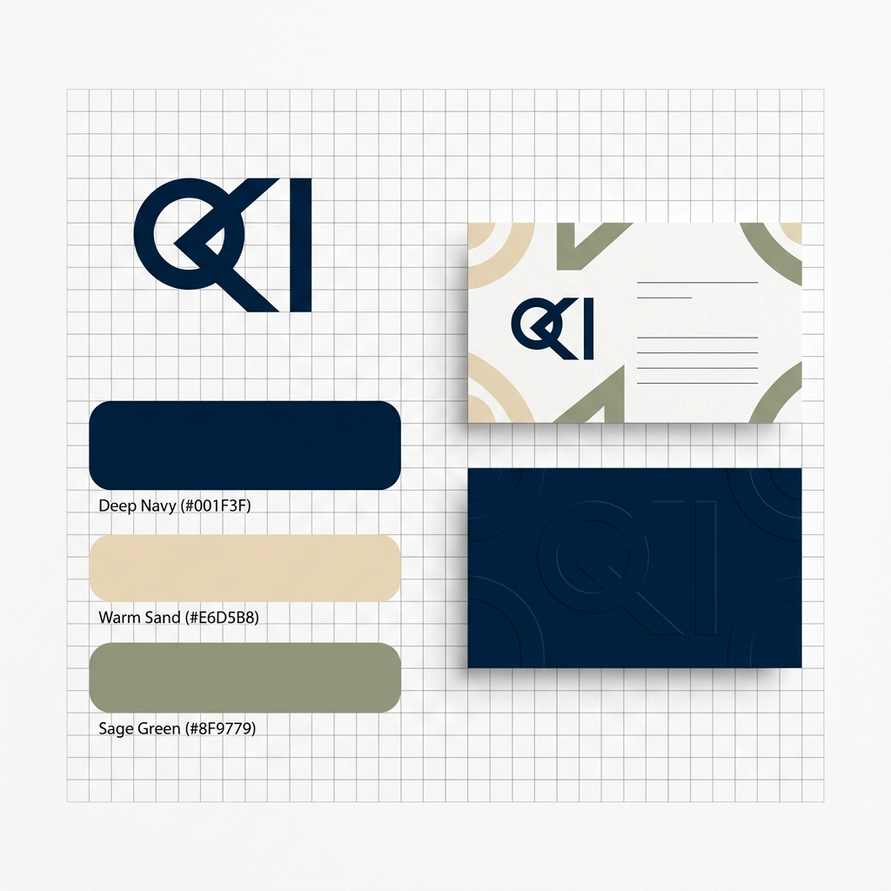
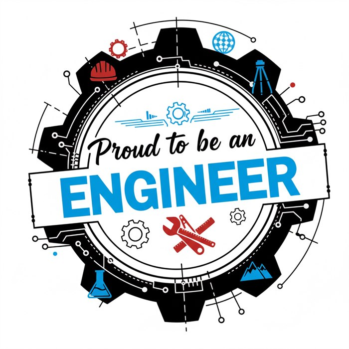
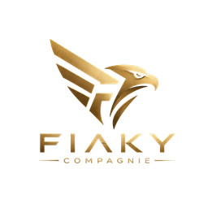
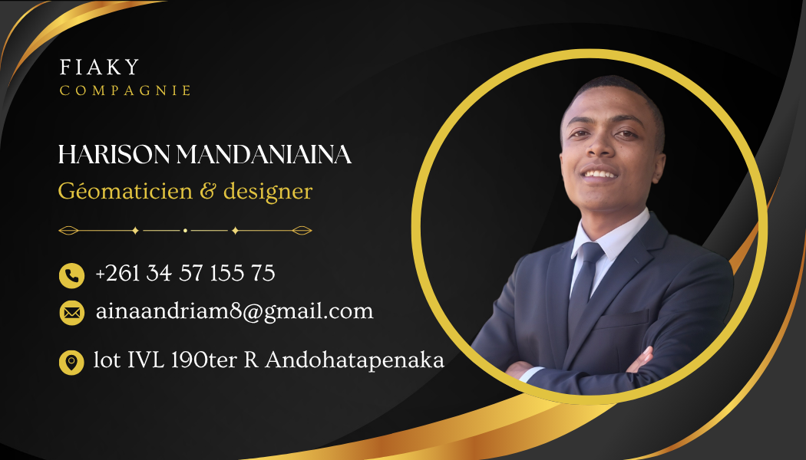
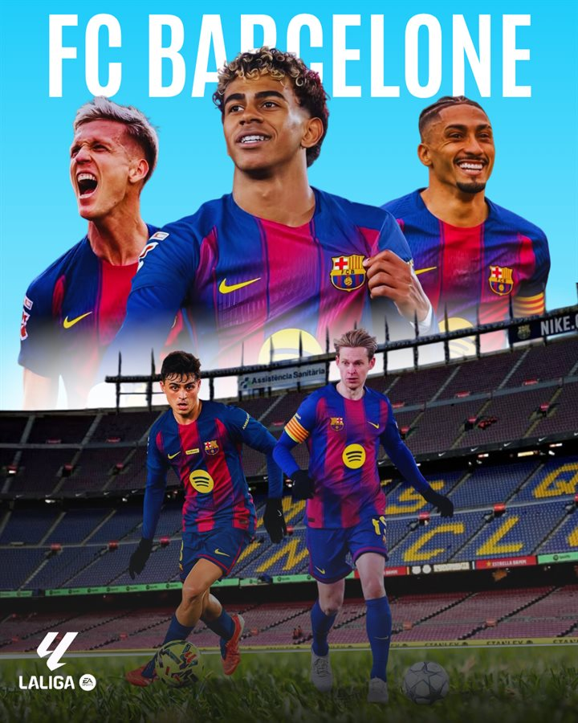
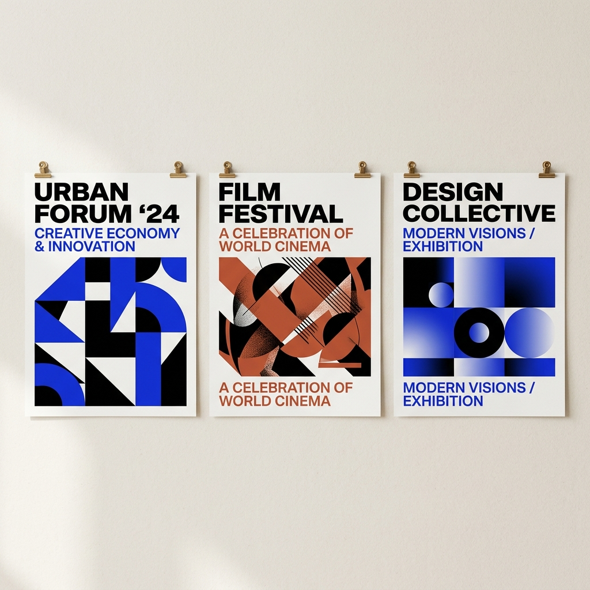
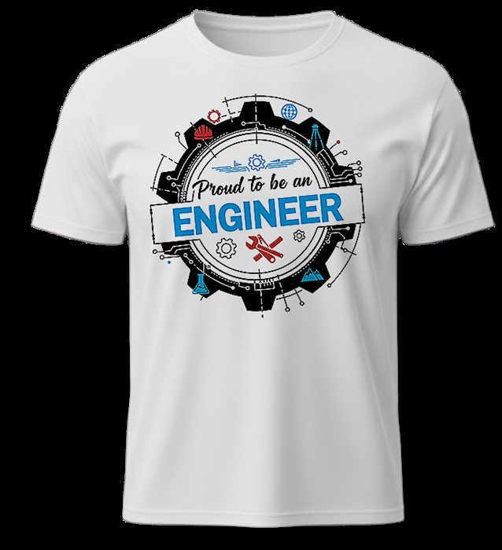

Fiaky Compagnie — Identité visuelle
Création complète de l'identité visuelle de Fiaky Compagnie : logotype aigle doré sur fond sombre, palette noir & or, typographie premium et déclinaison sur carte de visite.
Portfolio · Design
Identité visuelle · Affiches · UI · Présentations · Cartographie
Voir les projets
Création complète de l'identité visuelle de Fiaky Compagnie : logotype aigle doré sur fond sombre, palette noir & or, typographie premium et déclinaison sur carte de visite.

Projet de création d'identité cohérente et déclinable avec un rendu réaliste sur différents supports de communication.

Conception d'un logo géométrique en hexagone associant une icône de maison stylisée. Palette bicolore marine / saumon, lisible en toute taille.

Exploration de branding et conception d'un logotype additionnel avec un design moderne et mémorable.

Création d'un logo clair, polyvalent et très lisible, pensé pour être le plus direct et reconnaissable possible.

Design de carte de visite premium : fond noir mat avec ondes dorées, portrait encadré d'un cercle or, typographie élégante. Déclinaison recto / verso cohérente avec la charte Fiaky.

Création d'une étiquette ronde de remerciement pour une soutenance de mémoire de licence. Graphisme tech (circuits imprimés), typographie calligraphique, déclinaison ronde et rectangulaire.

Version panoramique de l'étiquette de remerciement : fond dégradé vert pâle, motifs circuits, citation malagasy et hexagones décoratifs. Prête pour impression autocollante.

Composition publicitaire sportive : montage photographique multi-joueurs sur fond stade, typographie bold, palette aux couleurs du club. Format carré optimisé pour les réseaux sociaux.

Conception d'affiches percutantes pour des événements avec une forte cohérence visuelle.

Création d'un design broderie/sérigraphie pour t-shirt à destination d'étudiants en génie. Motif engrenage technique avec icônes d'ingénierie, badge central, typographie contrastée.
Aucun projet dans cette catégorie pour le moment.
Le design n'est pas un habillage — c'est une prise de position. Chaque choix typographique, chaque couleur, chaque mise en page répond à un objectif précis : clarifier, convaincre ou émouvoir.
Cette sélection couvre des disciplines variées, de la cartographie aux interfaces numériques, en passant par l'identité visuelle et les productions print. La rigueur technique y rencontre la sensibilité graphique.
Hiérarchie visuelle soignée. Information accessible au premier regard.
Système de design rigoureux, déclinable sur tous les supports.
Compositions mémorables, résultat mesurable pour le commanditaire.